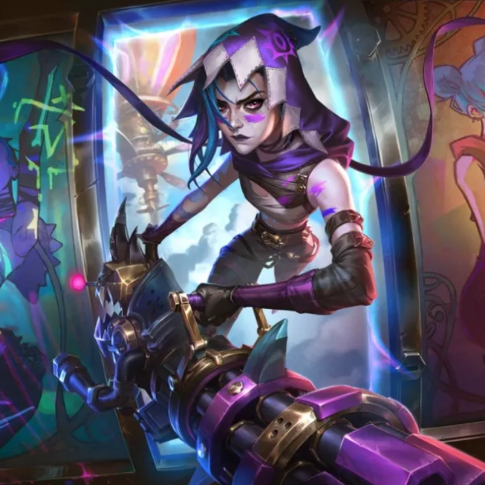
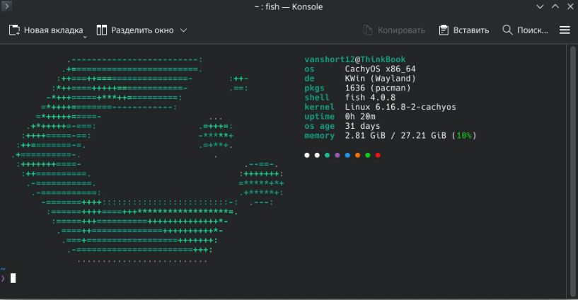
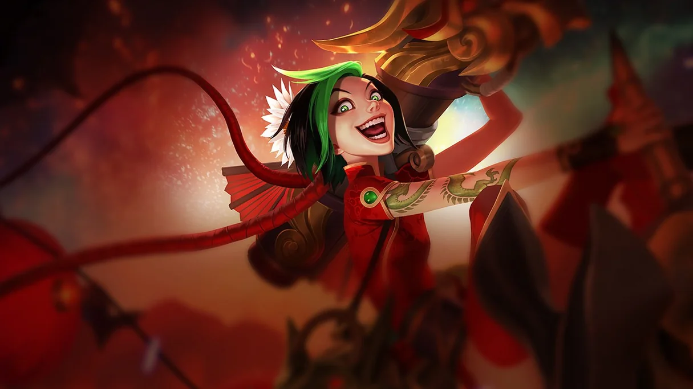
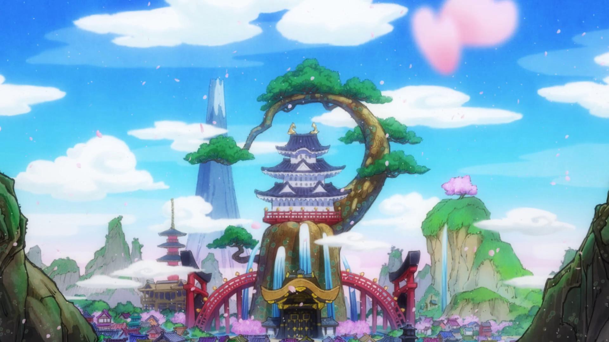

Thrasha's Website :) | About me :DI am Thrasha! I am a 17-year-old high school graduate with a strong interest in computer science and software development. I am continuously working to expand my knowledge through independent learning and hands-on projects. Currently, I am focusing on Python, Rust, HTML, and CSS, while also having some previous experience with Java, C#, and C++.
I have experience experimenting with various Linux distributions and am looking to expand my knowledge of server administration and networking by hosting a server on my personal network. Some of my current and planned projects include setting up a self-hosted Git repository, Pi-hole, small game servers, and a Plex media server.
One project I am particularly interested in pursuing is developing my own private messaging and voice communication platform, featuring end-to-end encryption. With the direction of current communication platforms and their moderation practices, I would like to explore creating an alternative that prioritizes user privacy and control. I plan to develop the application entirely in Rust, in collaboration with Catlz, initially supporting a small community of approximately 3–10 users, with the possibility of expanding in the future.


I absolutely love playing video games, with competitive gaming taking up a significant portion of my free time. Some of the games I regularly enjoy include League of Legends (if you couldn't tell, I am a jinx main :p), Counter-Strike, VALORANT, and Overwatch. I also used to compete in Fortnite, although I never managed to reach particularly high levels of competition.
While I enjoy the intensity and challenge of competitive games, I also have a strong appreciation for action RPGs and story-driven experiences. My personal favorite game is Bloodborne, though I've also spent time playing Minecraft, Dark Souls 1 and 3, various Resident Evil titles, and several Tomb Raider games.
I've also explored a variety of other genres, including MMOs such as Hypixel SkyBlock, racing games like Forza and Assetto Corsa, and skateboarding games such as Skate 3 and Skate 4.
Also I LOVED little kitty big city. It is by far the best cozy game I have ever played and I would highly recommend playing it :)
Since I was in middle school, anime has been a major part of my life, influencing and inspiring me to complete several major milestones in my life. More Specifically, one piece, which is by far the most inspiring to me. The selflessness and Freedom Monkey D. Luffy eluminates the world with has inspired me to keep pushing through some pretty rough times.
A few more of my favorites are Attack on Titan, Death Note, JoJos Bazzar Adventures, bleach, call of the night, and my personal favorite, darling in the franxx. One thing I enjoy the most about these shows, is the love the authors put into the character creation and world building. These two points are where I believe an author truly makes these worlds their own.
All of my (very professional ;) ) ratings can be found on my personal myanimelist page
